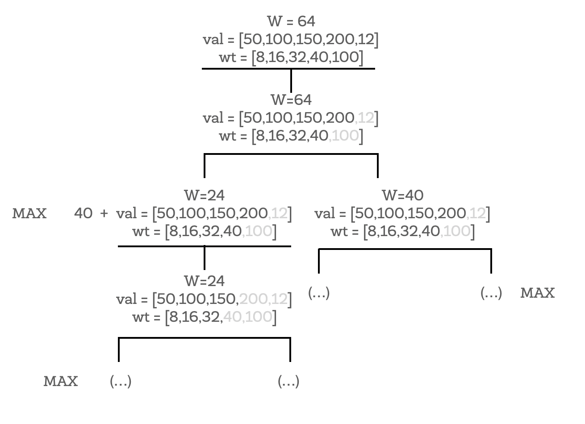

class: center, middle <center><img src="images/ub.png" width="150"></center> # **ALGORÍSMICA** ## El problema de la motxilla Jordi Vitrià, Mireia Ribera .blue[jordi.vitria@ub.edu] | .blue[ribera@ub.edu] --- ## El problema de la motxilla **Problema**: Ens donen el pes i el valor de `n` items, que s'han de posar en un motxilla que aguanta un pes de `W`. Quin és el valor màxim que podem portar? ```python from itertools import combinations def brute_force(number, capacity, weight_cost): :param number: number of existing items :param capacity: the capacity of knapsack :param weight_cost: list of tuples like: [(weight, cost), (weight, cost), ...] """ best_cost = None best_combination = [] # generating combinations by all ways: C by 1 from n, C by 2 from n, ... for way in range(number): for comb in combinations(weight_cost, way + 1): weight = sum([wc[0] for wc in comb]) cost = sum([wc[1] for wc in comb]) if (best_cost is None or best_cost < cost) and weight <= capacity: best_cost = cost best_combination = [0] * number for wc in comb: best_combination[weight_cost.index(wc)] = 1 return best_cost, best_combination brute_force(4, 64, [(8,50),(16,100),(32,150),(40,200)]) > (350, [1, 1, 0, 1]) ``` --- ## El problema de la motxilla **Problema**: Ens donen el pes i el valor de `n` items, que s'han de posar en un motxilla que aguanta un pes de `W`. Quin és el valor màxim que podem portar? ```python def knapSack(W, wt, val, n): # versió recursiva # els vectors han d'estar ordenats per pes if n == 0 or W == 0 : return 0 # Si el pes és > que el que soporta la motxilla, s'elimina if (wt[n-1] > W): return knapSack(W, wt, val, n-1) # retornem el retorn de l'item n-1 else: return max(val[n-1] + knapSack(W-wt[n-1], wt, val, n-1), knapSack(W, wt, val, n-1)) val = [50,100,150,200,12] wt = [8,16,32,40,100] W = 64 n = len(val) print (knapSack(W, wt, val, n)) > 350 ``` --- ## El problema de la motxilla <center></center>